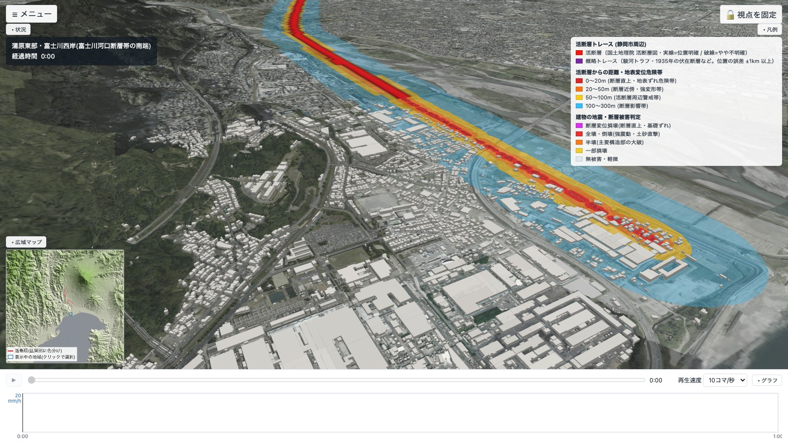

01
活断層はどこを通っているか
国土地理院「活断層図（都市圏活断層図）」の断層線を、航空写真の 3D 地形に重ねます。断層から 20 m 以内（地表ずれ危険帯）・100 m 以内（近傍警戒帯）を塗り分け、地表を「活断層からの距離」で表示すると、富士川河口断層帯が通る蒲原・富士川西岸などで断層のすぐ近くにある家や道路が一目で分かります。
- 国土地理院 活断層図
- 20 m / 100 m / 300 m 帯
- 3D 地表断層段差の強調